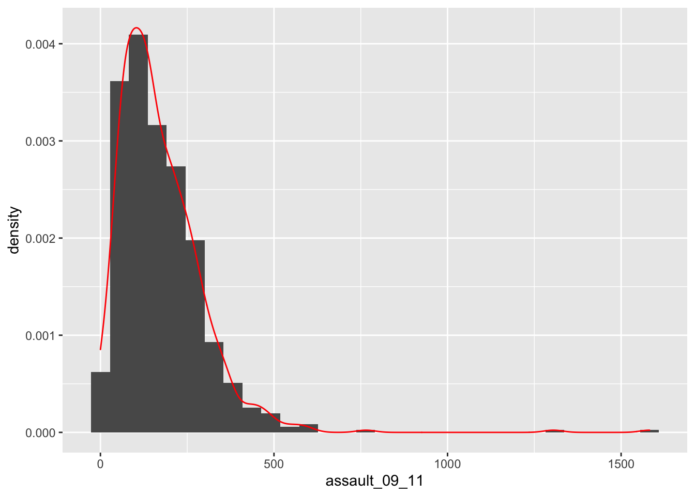
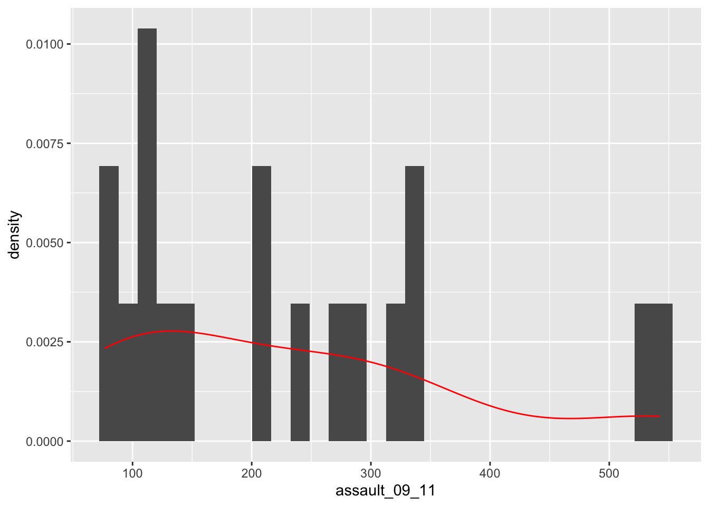
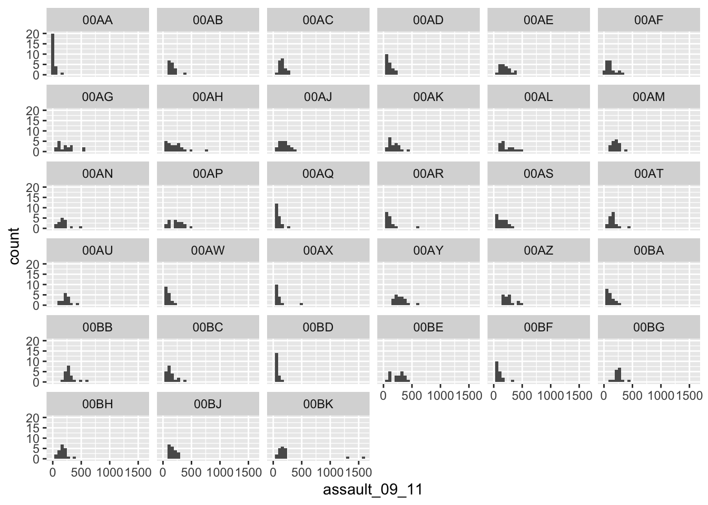
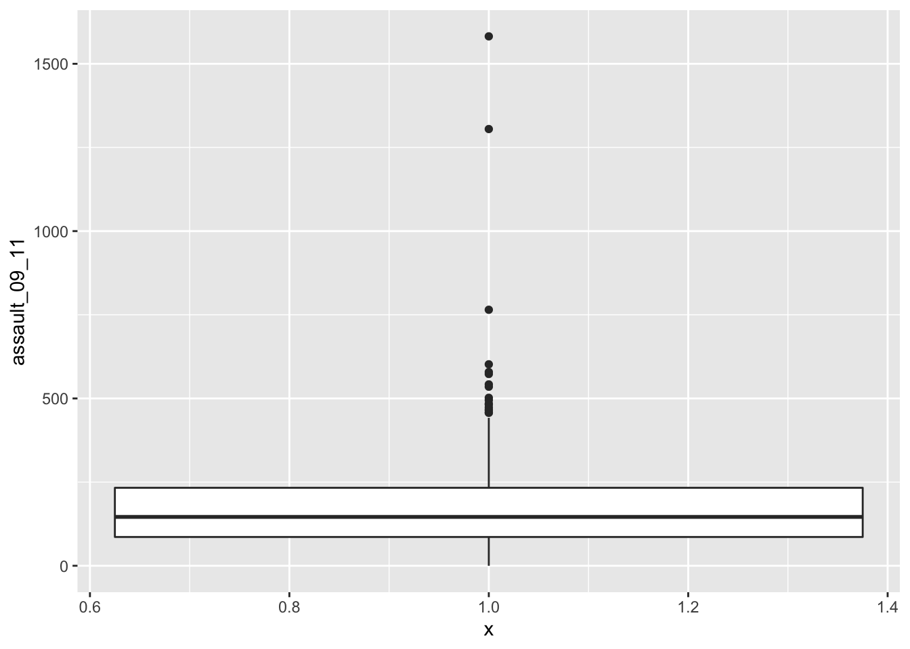
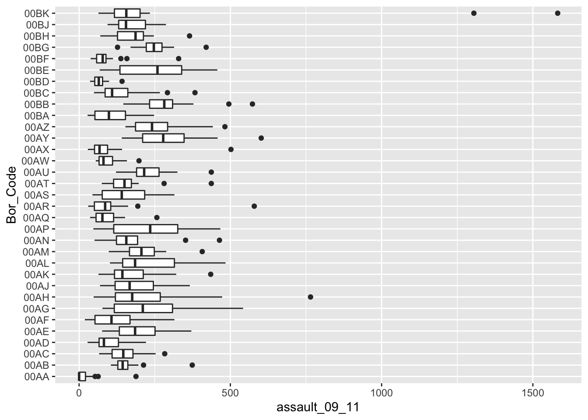

3 Examining data II
3.1 Introduction
Welcome to your third week of Introduction to Quantitative Research Methods. This week we will focus again on examining data, with a particular focus on data visualisation. For the tutorial we will continue to use the asssault incident dataset that we used last week.
3.1.1 Video: Overview
[Lecture slides] [Watch on MS stream]3.2 Reading list
Core reading
- Lane et al., 2003, Chapter 3: Summarizing Distributions. In: Lane et al., 2003, Introduction to Statistics. Houston, Texas: Rice University. [Link]
3.3 Examining data
3.4 Visualising data
3.4.1 Video: Visualising data
[Lecture slides] [Watch on MS stream]This week we are picking up where we left off in the previous section. Repeat the opening steps in last weeks practical to reload the input object containing the assault incidents for London. Through plotting we can provide graphical representations of the data to support the statistics above.
# load csv file from working directory
input <- read.csv('ambulance_assault.csv')To simply have the Ward codes on the x-axis and their assault values on the y-axis we need to plot the relevant columns of the input object.
# quick plot
plot(input$WardCode, input$assault_09_11)
3.4.2 Histograms
The basic plot created in the previous step does not look great and it is hard to interpret the raw assault count values. A frequency distribution plot in the form of a histogram will be much better. There are many ways to do this in R but we will use the functions contained within the ggplot2 library.
# quick plot using the ggplot2 library
p <- ggplot(input, aes(x=assault_09_11))
# inspect
p
Questions
- Remember why printing/plotting the
pobject currently results in an empty canvas?
The ggplot(input, aes(x=assault_09_11)) section means “create a generic plot object (called p) from the input object using the assault_09_11 column as the data for the x axis”. Remember the data variables are required as aesthetics parameters so the assault_09_11 appears in the aes() brackets.
Histograms provide a nice way of graphically summarising a dataset. To create the histogram you need to add the relevant ggplot2 command (geom).
# quick histogram using the ggplot2 library
p + geom_histogram()## `stat_bin()` using `bins = 30`. Pick better value with `binwidth`.
The height of each bar (the x-axis) shows the count of the datapoints and the width of each bar is the value range of datapoints included. If you want the bars to be thinner (to represent a narrower range of values and capture some more of the variation in the distribution) you can adjust the binwidth. Binwidth controls the size of ‘bins’ that the data are split up into. We will discuss this in more detail later in the course, but put simply, the bigger the bin (larger binwidth) the more data it can hold. Try:
# updated histogram using the ggplot2 library
p + geom_histogram(binwidth=10)
You can also overlay a density distribution over the top of the histogram. Again, this will be discussed in more detail in the coming weeks, but think of the plotted line as a summary of the underlying histogram. For this we need to produce a second plot object that says we wish to use the density distribution as the y variable.
# histogram with density distribution using the ggplot2 library
p2 <- ggplot(input, aes(x=assault_09_11, y=..density..))
# plot
p2 + geom_histogram() +
geom_density(fill=NA, colour='red')## `stat_bin()` using `bins = 30`. Pick better value with `binwidth`.
Questions
- What does the
fillparameter do in the above code?
This plot has provided a good impression of the overall distribution, but it would be interesting to see characteristics of the data within each of the Boroughs. We can do this since each Borough in the input object is made up of multiple wards. To see what we mean, we can select all the wards that fall within the Borough of Camden, which has the code 00AG (if you want to see what each Borough the code corresponds to, and learn a little more about the statistical geography of England and Wales, then do have a look here.
# filter our dataset
camden <- input[input$Bor_Code=='00AG',]The crucial part of the code snippet above is what’s included in the square brackets [ ]. We are subsetting the input object, but instead of telling R what column names or numbers we require, we are requesting all rows in the Bor_Code column that contain 00AG. 00AG is a text string so it needs to go in speech marks '' (or "") and we need to use two equals signs == in R to mean “equals to”. A single equals sign = is another way of assigning objects (it works the same way as <- but is much less widley used for this purpose because it is used when paramaterising functions). Let’s quickly compare our original input object with our newly created camden object:
# inspect input dataset
nrow(input)## [1] 649# inspect Camden dataset
nrow(camden)## [1] 18# inspect Camden dataset
head(camden)## Bor_Code WardName WardCode
## 128 00AG Belsize 00AGGD
## 129 00AG Bloomsbury 00AGGE
## 130 00AG Camden Town with Primrose Hill 00AGGF
## 131 00AG Cantelowes 00AGGG
## 132 00AG Fortune Green 00AGGH
## 133 00AG Frognal and Fitzjohns 00AGGJ
## WardType assault_09_11
## 128 Prospering Metropolitan 91
## 129 Prospering Metropolitan 315
## 130 Prospering Metropolitan 535
## 131 Multicultural Metropolitan 238
## 132 Prospering Metropolitan 106
## 133 Prospering Metropolitan 77So to produce Camden’s frequency distribution, with the corresponding density distribution, the code above needs to be replicated using the camden object in the place of input:
# histogram with density distribution using the ggplot2 library
p2.camden <- ggplot(camden, aes(x=assault_09_11, y=..density..))
# plot
p2.camden + geom_histogram() +
geom_density(fill=NA, colour='red')## `stat_bin()` using `bins = 30`. Pick better value with `binwidth`.
# plot pretty(ish)
p2.camden + geom_histogram() +
geom_density(fill=NA, colour='red') +
ggtitle('Assault incidents in Camden')## `stat_bin()` using `bins = 30`. Pick better value with `binwidth`.
As you can see this looks a little different from the density of the entire dataset. This is largely becasue we have relatively few rows of data in the camden object (as we saw when using nrow(camden)). Nevertheless it would be interesting to see the data distributions for each of the London Boroughs. It is a chance to use the facet_wrap() function in R. This brilliant function lets you create a whole load of graphs at once!
# note that we are back to using the `p` object since we need all our data for this
# this code may generate a large number of warning messages relating to the plot binwidth, don't worry about them
p + geom_histogram() +
facet_wrap(~Bor_Code)## `stat_bin()` using `bins = 30`. Pick better value with `binwidth`.
Yes. It is that easy. Let’s try using facet_wrap() to plot according to Ward type
# note that we are back to using the `p` object since we need all our data for this
# this code may generate a large number of warning messages relating to the plot binwidth, don't worry about them
p + geom_histogram() +
facet_wrap(~WardType)## `stat_bin()` using `bins = 30`. Pick better value with `binwidth`.
Questions
- What are the key differences in the distributions between the different types of our
facet_wrap()plots?
The facet_wrap() part of the code simply needs the name of the column you would like to use to subset the data into individual plots. Before the column name a tilde ~ is used as shorthand for “by” - so using the function we are asking R to facet the input object into lots of smaller plots based on the Bor_Code column in the first example and WardType in the second. Use the facet_wrap() help file to learn how to create the same plot but with the graphs arranged into 4 columns.
3.4.3 Box and whisker plots
In addition to histograms, a type of plot that shows the core characteristics of the distribution of values within a dataset, and includes some of the summary() information we generated earlier, is a box and whisker plot (boxplot for short). These too can be easily produced in R.

Figure 3.1: A box and whisker plot.
We can create a third plot object for this from the input object:
# note that the `assault_09_11` column is now y and not x
# we also specified x = 1 to algin the plot to the x-axis (any single number would work)
p3 <- ggplot(input, aes(x=1, y=assault_09_11))
# add the boxplot geom
p3 + geom_boxplot()
If we are just interested in Camden then we can use the camden object created above in the code.
# boxplot for camden only
p3.camden <- ggplot(camden, aes(x=1, y=assault_09_11))
# add the boxplot geom
p3.camden + geom_boxplot()
If you prefer you can flip the plot 90 degrees so that it reads from left to right:
# boxplot for camden only
p3.camden <- ggplot(camden, aes(x=1, y=assault_09_11))
# add the boxplot geom and rotate
p3.camden + geom_boxplot() +
coord_flip()
You can see that Camden looks a little different to the boxplot of the entire dataset. It would therefore be useful to compare the distributions of data within each of the Boroughs in a single plot as we did with the frequency distributions above. ggplot makes this very easy (again!), we just need to change the x parameter to the Borough code column (Bor_Code).
# boxplot for camden only
p4 <- ggplot(input, aes(x=Bor_Code, y=assault_09_11))
# add the boxplot geom and rotate
p4 + geom_boxplot() +
coord_flip()
Recap
In this section you have:
- Utilised some of the advanced functionality as part of the
ggplot2package, not least through the creation of facetted histogram plots usinggeom_histogram()andfacet_wrap()and also box and whisker plots withgeom_boxplot(). - Subset data based on a specific criteria (in this case selection the data corresponding to Camden).
- Explored the distribution of dataset through histograms, density and boxplots.
3.5 Seminar
Seminar task
- Take the census-historic-population-borough.csv file we used to produce the scatter plots of London’s population in Week 01 and create 3 different types of plots from one or more of the variables.
Seminar link
Seminars for all groups take place on Thursday morning. You can find the Zoom link to your seminar group on Moodle.
3.6 Before you leave
Save your R script by pressing the Save button in the script window. That is it for this week!